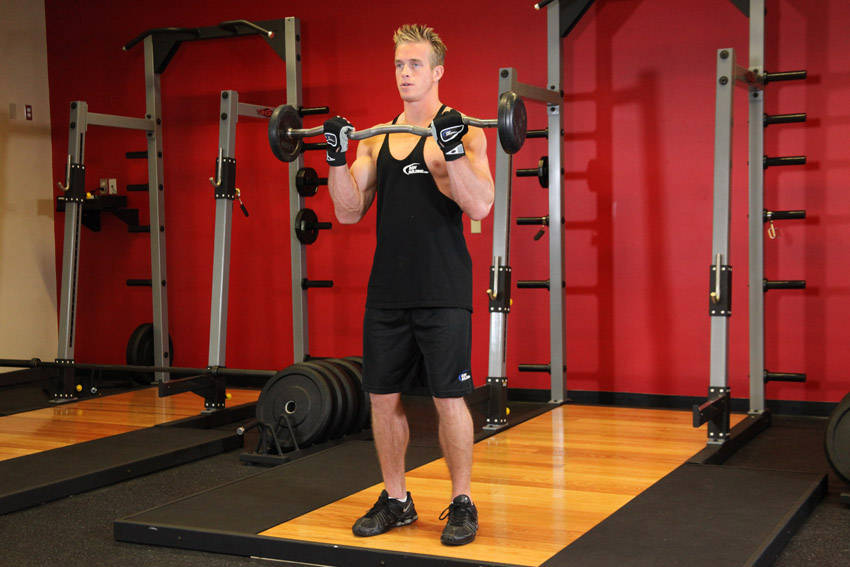

- Stand up straight while holding an EZ curl bar at the wide outer handle. The palms of your hands should be facing forward and slightly tilted inward due to the shape of the bar. Keep your elbows close to your torso. This will be your starting position.
- Now, while keeping your upper arms stationary, exhale and curl the weights forward while contracting the biceps. Focus on only moving your forearms.
- Continue to raise the weight until your biceps are fully contracted and the bar is at shoulder level. Hold the top contracted position for a moment and squeeze the biceps.
- Then inhale and slowly lower the bar back to the starting position.
- Repeat for the recommended amount of repetitions.
This exercise appears in Programmd training programs. Take the quiz to find one for your gym.
Find your program